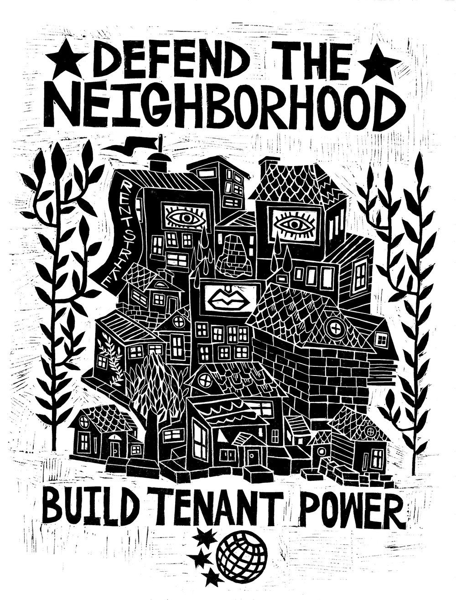

Ways to Mitigate Gentrification
People can help protect the Lower East Side by building on a long history of preservation and organizing. The National Historic Preservation Act (1966) and the NYC Landmarks Law (1965) followed early local models like Charleston (1931), New Orleans’s Vieux Carré (1936), and the Old Georgetown Act (1950). In 2008 the National Trust for Historic Preservation named the neighborhood one of America’s most endangered historic places. After years of advocacy by the Lower East Side Preservation Initiative, the East Village/Lower East Side Historic District was designated in 2012, but landmarking protects buildings, not tenants.

Residents have also fought displacement since the Cooper Square Committee resisted urban renewal and founded its community land trust in 1994, and the Coalition to Protect Chinatown and the Lower East Side says the 2008 East Village rezoning left Chinatown and the LES exposed to luxury development. Today, people can back groups like GOLES, CAAAV, and the Cooper Square Committee through volunteering, donations, or showing up at rallies, Community Board meetings, and Landmarks hearings. They can help tenants learn their rights under Good Cause Eviction, rent stabilization, and Right to Counsel. They can press officials to implement the Community Opportunity to Purchase Act (COPA), pass the Tenant Opportunity to Purchase Act (TOPA), and take up the Chinatown Working Group rezoning plan. Shopping at long-standing local businesses also helps keep both housing and the neighborhood’s character in place.